養成策略
每周商店必買攻略
不知道什么該買？萌新們可以參考這個必買攻略，確保自己至少每個該買的商店都逛過了 ??。商店里面其他物品可以按需購買。
| 商店 | 物品 | 刷新頻率 | 圖標 | 備注 |
|---|---|---|---|---|
| 賽季商店（不肝商店） - 賽季追趕 | 通寶 | 每周刷新 |  | 長期每周必買 |
| 賽季商店-戰鬥養成 | 嘯玉 （當前階的疊音材料） | 每周刷新，剩余庫存不清空 |  | 長期每周必買 |
| 賽季商店-戰鬥養成 | 金絲錢袋（通寶） | 每周刷新 | 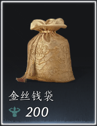 | 清空體力的主要方式 |
| 賽季商店-戰鬥養成 | 一盒短陌錢 | 每周刷新 | 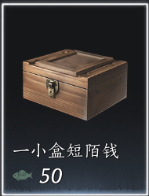 | 后期如果鬥蛐蛐，開封跑商的話不需要買 |
| 賽季商店-戰鬥養成 | 心法箱子 | 每周刷新 | 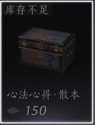 | 長期每周必買 |
| 賽季商店-戰鬥養成 | 武學心得 | 每周刷新 | 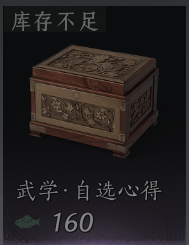 | 長期每周必買 |
| 賽季商店-戰鬥養成 | 奇術支援箱 | 每周刷新 | 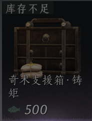 | 不想肝奇術升級 |
| 賽季商店-裝備寶匣 | 當前階的裝備匣 | 每周刷新 | 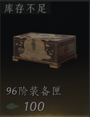 | 么玉充足，缺裝備的時候 |
| 賽季商店-金裝兌換 | 當前階的轉律石 | 每周刷新 |  | 長期每周必買 |
| 賽季商店-金裝兌換 | 當前階的金妙音石 | 每周刷新 |  | 長期每周必買 |
| 賽季商店-金裝兌換 | 當前階的金裝自選匣 | 每周補貨，有庫存上限 |  | 能買就買 |
| 賽季商店-營生養成 | 營生手記 | 每周刷新 | 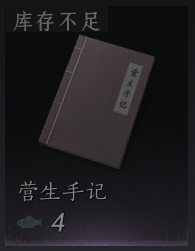 | 能買就買，需要提升懸壺/文士的等級來解鎖高階的藥品/符帖來提升戰斗能力。 |
| 賽季商店-外觀兌換 | 裊裊之音 | 每周刷新 |  | 度過新手期，買完易水歌之后，可以開始買。 |
| 社交商店-江湖行商店 | 當前階的止戈定音石 | 每周刷新 |  | 按需購買。不玩止戈(pvp)或者百業戰可以忽略。 |
| 社交商店-江湖行商店 | 當前階的止戈變音石 | 每周刷新 | 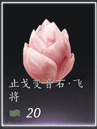 | 按需購買。不玩止戈(pvp)或者百業戰可以忽略。 |
| 百業-赤金小鋪 | 繞梁之音 | 每月刷新 | 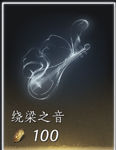 | 不換白不換，可以抽外觀。 |
| 傳承商店 | 奇術支援箱 | 每周刷新 |  | 長期每周必買 |
| 傳承商店 | 當前階的變音石 | 每周補貨，剩余庫存不清空 |  | 長期每周必買 |
| 傳承商店 | 心法箱子 | 每周刷新 | 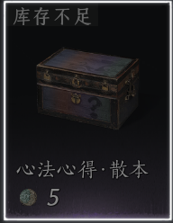 | 長期每周必買 |
| 不錯小店 | 通寶 | 每周刷新 |  | 缺通寶可以買 |
| 戰令商店 | 當前階的轉律石 | 每周刷新 | 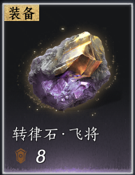 | 長期每周必買。注意看準描述是幾階的，別買錯了（痛的教訓）。因為戰令商店所有轉律石都有，亂序的。 |
| 戰令商店 | 當前階的變音石 | 每周刷新 | 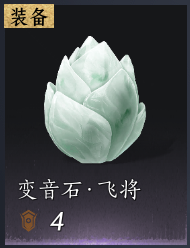 | 同上 |
| 戰令商店 | 奇術支援箱 | 每周刷新 |  | 長期每周必買 |
| 戰令商店 | 不錯鳥羽 | 每期戰令刷新 |  | 建議買。可以到不錯小店兌換外觀，通寶。 |
| 戰令商店 | 等級上限帖 | 每期戰令刷新 |  | 只有購買了戰令的才有意義買。 |
| 商店->精選->禮包 | 通寶 | 每周刷新 | 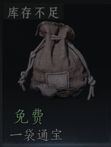 | 免費，記得領 |
| 商店->精選->道具->江湖百珍 | 裊裊之音 | 每周刷新 |  | 度過新手期，買完易水歌之后，可以開始買。 |
| 商店->和鳴->天精商店 | 裊裊之音 | 沒有庫存限制 |  | 需要消耗天精。天精是和鳴消耗裊裊之音抽外觀時會獲得的。 |
| 商店->和鳴->地華商店 | 裊裊之音 | 每月刷新 | 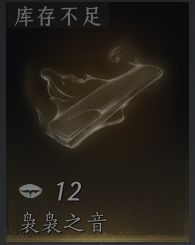 | 需要消耗地華。地華是和鳴消耗繞梁之音抽普通外觀獲得的。 |
| 商店->和鳴->地華商店 | 折音券 | 每月刷新 |  | 需要消耗地華。地華是和鳴消耗繞梁之音抽普通外觀獲得的。如果你需要用長鳴珠（充值/氪金）買外觀，有券在手，花錢更少。 |